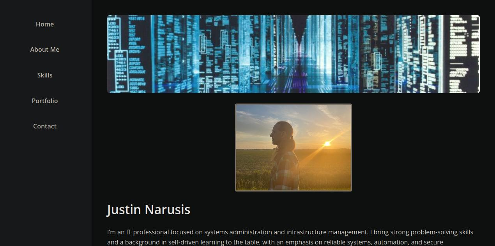

Custom Portfolio Website
This site is my professional portfolio, hand-coded using HTML5 and CSS3. It reflects my current technical direction, evolving skills, and self-driven learning. Designed for long-term clarity and adaptability, it also serves as a living demonstration of my work ethic, learning process, and ability to communicate through clean design.

Homepage screenshot showing layout and sidebar navigation
Key Features
- Clean, modern sidebar layout with fully responsive design
- Dark theme interface and accessible typography
- Consistent structure for project and certification pages
- Unified CSS system for maintainable, single-source styling
Tools & Technologies
- HTML5 + CSS3
- GitHub & GitHub Pages (static site deployment)
- Version control with clean commit and branching workflow
Focus Areas Demonstrated
- Technical documentation and clean UI/UX presentation
- Version-controlled site structure with readable project links
- Professional tone and forward-looking career representation